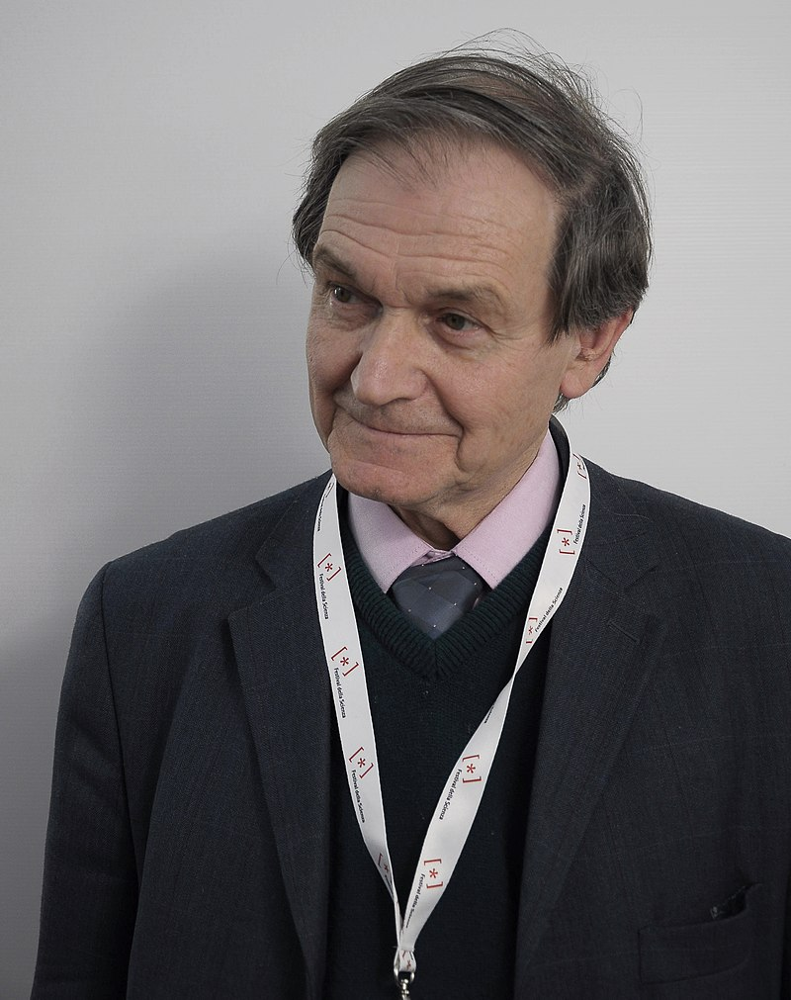
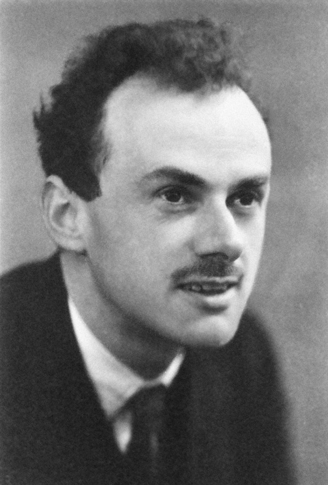

20th Century Scientists
20th Century to 21st Century.
Roger Penrose
| Born: | 1931 |
| Died: | |
| Known for: | The Nature of Space and Time (with Stephen Hawking) |
The Nature of Space and Time (with Stephen Hawking)
The Nature of Space and Time is a book that documents a debate on physics and the philosophy of physics between the British theoretical physicists Roger Penrose and Stephen Hawking. The book was published by Princeton University Press in 1996. The event that is featured in the book took place in 1994 at the University of Cambridge's Isaac Newton Institute. The debate was modeled on the series of debates between Albert Einstein and Niels Bohr.
Albert Einstein

| Born: | 1879 |
| Died: | 1955 |
| Known for: | Unified field theory |
Unified field theory
Einstein wrote in a letter to his friend Besso in 1954, “I consider it quite possible that physics cannot be based on the field concept, i.e., continuous structure. In that case, nothing remains of my entire castle in the air, gravitation theory included, (and of) the rest of modern physics”
Erwin Schrödinger

| Born: | 1887 |
| Died: | 1961 |
| Known for: | Schrödinger equation |
The Importance of Form by Erwin Schrödinger
But when you come to the ultimate particles constituting matter, there seems to be no point in thinking of them again as consisting of some material. They are, as it were, pure shape, nothing but shape; what turns up again and again in successive observations is this shape, not an individual speck of material.
Paul Dirac
| Born: | 1902 |
| Died: | 1984 |
| Known for: | One of the founders of quantum mechanics and quantum electrodynamics |
quantum mechanics and quantum electrodynamics
Paul Adrien Maurice Dirac (8 August 1902 - 20 October 1984) was an English mathematical and theoretical physicist who is considered to be one of the founders of quantum mechanics and quantum electrodynamics. He is credited with laying the foundations of quantum field theory. He was the Lucasian Professor of Mathematics at the University of Cambridge, a professor of physics at Florida State University and the University of Miami, and a 1933 Nobel Prize in Physics recipient.